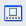

Click PDF in the View & Use window, then click Create/Edit PDF file on the list to open the Create/Edit PDF file window.
In the Create/Edit PDF file window, you can add/delete pages and rearrange the page order of PDF files created with MP Navigator EX.
 Important
ImportantYou cannot save images scanned at 10501 pixels or more in the vertical and horizontal directions.
You can create or edit up to 99 pages at one time using MP Navigator EX.
Rearrange Pages
You can move the selected image (outlined in orange).
Moves the selected image to the top.
Moves the selected image up one page.
Moves the selected image down one page.
Moves the selected image to the end.
 Note
NoteYou can also drag the image to rearrange the order.
Delete Selected Pages
Deletes the selected image.
Add Page
Allows you to select and add an existing PDF file.
Undo
Cancels the latest change made.
Reset
Cancels all the changes made.
Save Selected Pages
Opens the Save as PDF file dialog. Specify the save settings. Only the selected page is saved.
NoteWhen multiple pages are selected, a multiple-page PDF file is created.
See "Save as PDF file Dialog" for details on the Save as PDF file dialog.
Save All Pages
Opens the Save as PDF file dialog. Specify the save settings and save all pages in the list as one PDF file or save all pages as separate PDF files.
NoteSee "Save as PDF file Dialog" for details on the Save as PDF file dialog.
Finish
Closes the Create/Edit PDF file window.
Toolbar
 (Rotate Left)
(Rotate Left)
Rotates the page 90 degrees counter-clockwise.
 (Rotate Right)
(Rotate Right)
Rotates the page 90 degrees clockwise.
 (Preview Mode)
Switches to Preview Mode.
The selected page appears in Preview.
 (Enlarge)
(Enlarge)
Enlarges the image displayed in Preview.
(Reduce)
Reduces the image displayed in Preview.
 (Full-screen)
(Full-screen)
Displays the entire image.
(Thumbnail Mode)
Switches to Thumbnail Mode. The pages are displayed in thumbnail view.